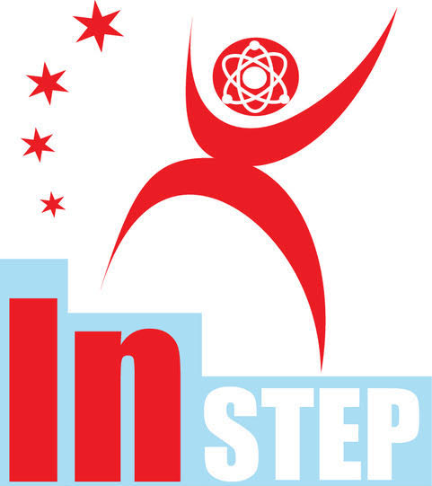

IN-STEP
Illinois Tech and National Louis University Summer Institute for Science, Technology and Engineering Practices: IN STEP connects Chicago Public School teachers to the real work of Illinois Tech scientists and engineers. Science and engineering practices are an essential component of the Next Generation Science Standards and are described as the names we give to children’s natural process of investigating the world. IN STEP provides teachers with actual experiences in the work of scientists and engineers, and with the support for translating the experiences into vibrant classroom instruction. IN STEP has grown out of Illinois Tech and NLU partnership on a Department of Education Teacher Quality Partnership Grant.
TQP
US Department of Education Teacher Quality Partnership Grants (TQP): TQP Grants bring universities and school districts together to prepare teachers in the real-world context of k-12 classrooms. TQP’s use the teacher residency approach, in which teacher candidates spend a year in the classroom of a mentor teacher as they take their university coursework. NLU and IIT hold a TQP that focuses on strengthening science teaching in Grades 2-8 classrooms in Chicago Public Schools.
